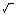

The device has a wide range of built-in functions for scientific, mathematical and statistical calculations. They are listed below alphabetically. All the functions listed below can be used in My programs-Add in. They may also be used as BASIC commands within programs. For trigonometric functions, entries can be made in degrees, radians or as a gradient value, as appropriate:
| DEGREE: | Set the device to degree entry mode, this is the default mode. |
| RADIAN: | Set the device to radian entry mode. |
| GRAD: | Set the device to gradient entry mode. |
These three modes (DEGREE, RADIAN, and GRAD) can be set from within a program. Once one mode is set, all entries for trigonometric functions must be in the units set (degrees, radians, or gradient values) until the mode is changed in a program. At the beginning of a program the form of angular values to decimal degrees.ABS ACS AHC AHS AHT ASN ATN
Return to Top|x|
Function: Absolute value Remarks: Returns the absolute value of the numeric argument. The absolute value is the magnitude of the number irrespective of its sign. ABS-10 is 10. Example: 10 PRINT ABS-10 (Answer=)10
Return to Topcos-1x
Function: Inverse or arc cosine Remarks: Returns the arc cosine of the numeric argument. The arc cosine is the angle whose cosine is equal to the argument. The value returned depends on the mode (DEGREE, RADIAN, or GRAD). Example: 10 DEGREE 20 PRINT ACS-0.5 (Answer=)120
Return to Topcosh-1x
Function: Inverse hyperbolic cosine Remarks: Returns the inverse hyperbolic cosine of the numeric argument. Example: 10 PRINT AHC 10 (Answer=)2.993222846
Return to Topsinh-1x
Function: Inverse hyperbolic sine Remarks: Returns the inverse hyperbolic sine of the numeric argument. Example: 10 PRINT AHS 27.3 (Answer=)4.000369154
Return to Toptanh-1x
Function: Inverse hyperbolic tangent Remarks: Returns the inverse hyperbolic tangent of the numeric argument. Example: 10 PRINT AHT 0.7 (Answer=)8.673005277E-01
Return to Topsin-1x
Function: Inverse or arc sine. Remarks: Returns the arc sine of the numeric argument. The arc sine is the angle whose sine is equal to the argument. The value returned depends on the mode (DEGREE, RADIAN or GRAD). Example: 10 DEGREE 20 PRINT ASN 0.5 (Answer=)30
Return to Toptan-1x
Function: Inverse or arc tangent Remarks: Returns the arc tangent of the numeric argument. The value returned depends on the mode (DEGREE, RADIAN or GRAD). Example: 10 DEGREE 20 PRINT ATN 1 (Answer=)45
Return to Topcosx
Function: Cosine Remarks: Returns the cosine of the angle argument. The value returned depends on the mode (DEGREE, RADIAN or GRAD). Example: 10 DEGREE 20 PRINT COS 120 (Answer=)-0.5
Return to Topx3
Function: Cube Remarks: Returns the cube of the argument. Example: 10 PRINT CUB 3 (Answer=)27
Return to Top3x
Function: Cube root Remarks: Returns the cube root of the argument. Example: 10 PRINT CUR 125 (Answer=)5
Function: Deg/min/sec to decimal conversion
Remarks: Converts an angle argument in DMS (Degree, Minutes, Seconds) format to DEG
(Decimal Degrees) format. In DMS format the integer portion of the number
represents degrees, the first and second digits after the decimal point represent
minutes, the third and fourth digits after the decimal point represent seconds, and
any further digits represent fractional seconds.
Example:
10 PRINT DEG 30.5230
(Answer=)30.875
Return to Top
Function: Decimal to deg/min/sec conversion Remarks: Converts an angle argument in DEG format to DMS format (see DEG). Example: 10 PRINT DMS 124.8055 (Answer=)124.48198Return to Top
Return to Topex
Function: Exponential function Remarks: Returns the value of e (2.718281828... the base of natural logarithms) raised to the value of the numeric argument. Example: 10 PRINT EXP 1.2 (Answer=)3.320116923
Return to Topn!
Function: Factorial n Remarks: Returns the factorial of the argument. Example: 10 PRINT FACT 7 (Answer=)5040
Return to Topcosh x
Function: Hyperbolic cosine Remarks: Returns the hyperbolic cosine of the numeric argument. Example: 10 PRINT HCS 3 (Answer=)10.067662
Return to Topsinh x
Function: Hyperbolic sine Remarks: Returns the hyperbolic sine of the numeric argument. Example: 10 PRINT HSN 4 (Answer=)27.2899172
Return to Toptanh x
Function: Hyperbolic tangent Remarks: Returns the hyperbolic tangent of the numeric argument. Example: 10 PRINT HTN 0.9 (Answer=)7.162978702E-01
Function: Integer Remarks: Maximum integer equal or less than numeric argument. The integer portion of PI is 3. Example: 10 PRINT INT -1.9 (Answer=)-2Return to Top
Return to Toplogex
Function: Natural or Naperian logarithm Remarks: Returns the logarithm to the base e (2.718281828...) of the numeric argument. Example: 10 PRINT LN 2 (Answer=)6.931471806E-01
Return to Toplog10x
Function: Common logarithm Remarks: Returns the logarithm to the base 10 of the numeric argument. Example: 10 PRINT LOG 1000 (Answer=)3
Return to TopnCr=n!/r!(n-r)!
Function: Combination Remarks: Enter the values as NCR (n,r). Example: 10 PRINT NCR(6,3) (Answer=)20
Return to TopnPr=n!/(n-r)!
Function: Permutation Remarks: Enter the values as NPR (n,r). Example: 10 PRINT NPR(6,3) (Answer=)120
Function: PI Remarks: PI is a numeric pseudovariable that has the value of pi. The value of PI has 10- digit accuracy. Example: 10 PRINT PI (Answer=)3.141592654Return to Top
Return to Top(x,y) -> (r,angle)
Function: Rectangular to Polar coordinate conversion Remarks: Converts numeric arguments of rectangular coordinates to their polar coordinate equivalents. Enter the values as POL(x,y). The first argument indicates the distance from the y-axis and the second the distance from the x-axis. The values converted indicate the distance from the origin and the angle in the polar coordinates, and are assigned to the variables Y and Z respectively. The angle depends on the mode (DEGREE, RADIAN, or GRAD). Example: 10 DEGREE 20 PRINT POL(8,6) 30 PRINT Z 40 PRINT Y (Answer) [20]10 (=r) [30]36.86989765 (=angle) [40]10 (=r)
Return to Topyx
Function: xth power Remarks: Returns the xth power of the numeric argument. Enter as y ^ x. Example: 10 PRINT 4^2.5 (Answer=)32
Return to Top1/x
Function: Reciprocal Remarks: Returns the reciprocal of the numeric argument. Example: 10 PRINT RCP 4 (Answer=)0.25
Return to Top(r,angle) -> (x,y)
Function: Polar to rectangular coordinate conversion Remarks: Converts numeric arguments of polar coordinates to their rectangular coordinate equivalents. Enter the values as REC(r,angle). The first argument indicates the distance from the origin and the second argument the angle. The angle depends on the mode (DEGREE, RADIAN or GRAD). The converted values indicate the distances from the y-axis and the x-axis, and are assigned to the variables Y and Z, respectively. Example: 10 DEGREE 20 PRINT REC(12,30) 30 PRINT Z 40 PRINT Y (Answer) [20]10.39230485 (=x) [30]6 (=y) [40]10.39230485 (=x)
Function: Random number Remarks: See RND and RANDOMIZE in the BASIC COMMAND DICTIONARY.Return to Top
Function: Sign of argument
Remarks: Returns a value based on the sign of the argument.
If x>0, the function returns 1.
If x<0, the function returns -1.
If x=0, the function returns 0.
Return to Top
Return to Topsin x
Function: Sine Remarks: Returns the sine of the angle argument. The value returned depends on the mode (DEGREE, RADIAN or GRAD). Example: 10 DEGREE 20 PRINT SIN 30 (Answer=)0.5
Return to Topx
Function: Square root Remarks: Returns the square root of argument. Example: 10 PRINT SQR 3 (Answer=)1.732050808
Return to Topx2
Function: Square Remarks: Returns the square of the argument. Example: 10 PRINT SQU 4 (Answer=)16
Return to Toptan x
Function: Tangent Remarks: Returns the tangent of the angle argument. The value returned depends on the mode (DEGREE, RADIAN or GRAD) Example: 10 DEGREE 20 PRINT TAN 45 (Answer=)1
Return to Top10x
Function: Antilogarithm Remarks: Returns the value of 10 (the base of the common log) raised to the value of the numeric argument. Example: 10 PRINT TEN 3 (Answer=)1000
Numerical Calculations:
For a calculation involving x, the number x must be within one of the ranges below:
-1x10100 < x <= -1x10-99 for negative x
10-99<= x<10100 for positive x
x=0
Note: =/= means not equal.
Functions:
| Function | Range of x |
|---|---|
| SIN x COS x TAN x |
DEGREE: |x|<1x1010 RADIAN : |x|<(pi/180)x1010 GRAD: |x|<(10/9)x1010 Also, for tan x only: (n=integer) DEGREE: |x|=/=90x(2n-1) RADIAN: |x|=/=(pi/2)x(2n-1) GRAD: |x|=/=100x(2n-1) |
| ASN x ACS x |
-1<=x<=1 |
| ATN x | |x|<1x10100 |
| HSN x HCS x HTN x | -227.9559242<=x<=230.2585092 |
| AHS x | |x|<1x1050 |
| AHC x | 1<=x <1x1050 |
| AHT x | |x|<1 |
| LN x LOG x | 1x10-99 <=x< 1x10100 |
| EXP x | -1x10100 <x<=230.2585092 |
| TEN x | -1x10100 <x<100 |
| CUR x | |x|<1x10100 |
| RCP x | |x|<1x10100, x =/=0 |
| SQU x | |x|<1x1050 |
| SQR x | 0<=x<1x10100 |
| CUB x | |x|<2.154434690x1033 |
| FACT x | 0<=x<=69 (x=integer) |
| DMS x DEG x | |x|<1x10100 |
| y^x (yx) (yx=10x.log y) |
when y>0, -1x10100 <x log y<100 when y=0, x>0 when y<0, x=integer or(1/X)=odd integer(x=/=0) and -1x10100 <x log |y|<100 |
| xy (yx=10x.log y) |
when y>0, -1x10100 <1/x X log y<100, x=/=0 when y=0, x>0 when y<0, x or 1/x must be non-zero integer, and -1x10100 <1/x X log |y|<100 |
| POL(x,y) x,y -> r, |
(x2+y2)<1x10100 (r= (x2+y2)) x/y < 1x10100 (=tan-1 y/x) |
| REC(r,) r,->x,y |
r<1x10100 (x=r cos) |r sin|<1x10100 (y=r sin) |r cos|<1x10100 |
| &Hx | 0<=x<=2540BE3FF |
| NPR(n,r) | n!/(n-r)!<10100 0<=r<=n<9999999999 n,r integers |
| NCR(n,r) | n!/((n-r)!xr!)<10100 0<=r<=n<9999999999 n,r integers when n-r<r, n-r<=69 when n-r=>r, r<=69 |